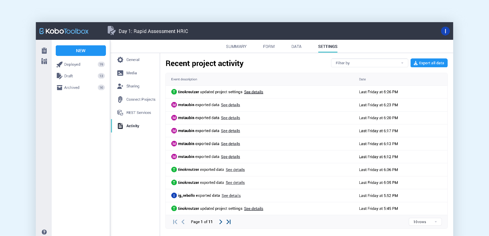
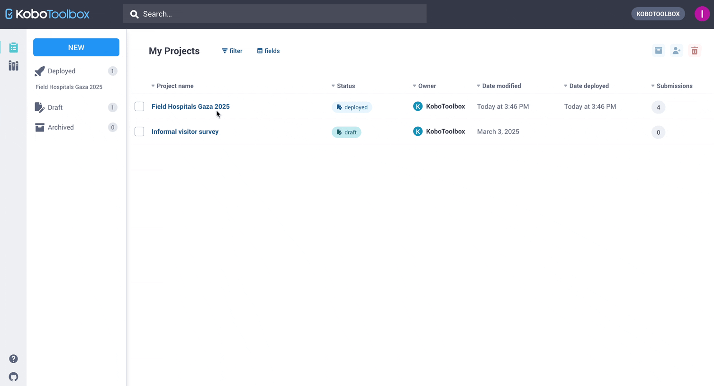

Search the knowledge base, browse our resources, and visit our forum for more detailed information
Read in English | Lire en français | Leer en español آخر تحديث: 15 مايو 2025
سجلات النشاط هي سجلات رقمية تلتقط الإجراءات والأحداث المهمة في حساب KoboToolbox الخاص بك. توفر لك سجلات النشاط سجلاً تفصيلياً للوصول إلى الحساب ونشاط المشروع. يمكن أن تكون هذه السجلات مفيدة من أجل:
مراقبة الأمان: معرفة من وصل إلى حسابك ومن أين
تتبع التغييرات: معرفة متى تم تعديل عناصر المشروع
المساءلة: تحديد أعضاء الفريق الذين أجروا تغييرات محددة
استكشاف الأخطاء وإصلاحها: فهم متى وكيف قد تكون المشكلات قد حدثت
يوفر KoboToolbox نوعين من سجلات النشاط لمساعدتك في مراقبة جوانب مختلفة من عملك:
سجلات الوصول: تدعم أمان الحساب من خلال عرض جميع عمليات تسجيل الدخول.
سجلات سجل المشروع: تتبع جميع الإجراءات والتغييرات التي أجراها أي مستخدم ضمن مشروع معين وبياناته.
ملاحظة: تعد سجلات النشاط إضافة حديثة نسبياً إلى KoboToolbox. نحن نعمل بنشاط على توسيع هذه الميزات في الأشهر التالية وتوفير سجل أكثر تفصيلاً للإجراءات في حساباتك ومشاريعك.
تسجل سجلات الوصول جميع أحداث المصادقة (عمليات تسجيل الدخول) لحساب KoboToolbox الخاص بك. تساعدك على مراقبة أمان الحساب من خلال إظهار متى وأين تم الوصول إلى حسابك.
يمكن العثور عليها تحت عنوان "نشاط الحساب الأخير"، والتي يمكنك الوصول إليها بسهولة عن طريق فتح إعدادات حسابك ضمن قسم الأمان.
تعرض سجلات الوصول:
تاريخ ووقت كل عملية تسجيل دخول
عنوان IP (معلومات الموقع)
المصدر (معلومات الجهاز والمتصفح)

لاحظ أن الأحداث المماثلة (عمليات المصادقة) التي تحدث خلال 60 دقيقة من بعضها البعض سيتم تجميعها معاً.

يتيح لك هذا القسم أيضاً تصدير جميع سجلات الوصول الخاصة بك من خلال النقر على زر "تصدير بيانات السجل" في الزاوية اليمنى العليا من الجدول. سيؤدي النقر على هذا الزر إلى بدء عملية تصدير البيانات:
ستبدأ معالجة السجلات إلى ملف تصدير .csv
سيتم عرض نافذة منبثقة تخبرك بأن العملية قد بدأت وما هي الخطوات التالية.
ستتلقى بريداً إلكترونياً يحتوي على رابط لتنزيل الملف بمجرد أن يصبح جاهزاً. ستحدد كمية البيانات المضمنة في سجلاتك المدة التي قد يستغرقها تلقي البريد الإلكتروني.
يجب أن يبدأ النقر على عنوان URL في البريد الإلكتروني على الفور تنزيل ملف .csv، اعتماداً على إعدادات المتصفح الخاص بك.
سيتضمن ملف التصدير معلومات أكثر تفصيلاً عن جميع أحداث المصادقة، بما في ذلك نوع المصادقة والتوقيت الدقيق.
يمكنك إجبار جميع الأجهزة التي تم تسجيل الدخول إليها حالياً في حسابك على تسجيل الخروج فوراً من خلال النقر على رابط "تسجيل الخروج من جميع الأجهزة" على يسار زر تصدير البيانات.
سيؤدي هذا الإجراء أيضاً إلى تسجيل خروجك من جلستك الحالية.
توفر سجلات سجل المشروع سجلاً تفصيلياً لجميع الأنشطة ضمن مشروع معين. تُظهر كل إجراء تم تنفيذه، سواء من قبل المستخدمين أو العمليات الآلية، مما يمنحك رؤية كاملة لسجل مشروعك.
لرؤية سجلات مشروع معين، انتقل إلى علامة تبويب الإعدادات لمشروعك وانتقل إلى قسم النشاط.

في هذه الصفحة ستجد عرض جدول يحتوي على جميع أنشطة المشروع، مرتبة حسب التاريخ. يتم إدراج كل إجراء فريد مع المستخدم الذي قام بتنفيذه والطابع الزمني المرتبط بهذا النشاط.
تلتقط سجلات سجل المشروع تقريباً كل إجراء ممكن يمكن تنفيذه في مشروع.
الفئة |
الإجراءات المضمنة |
|---|---|
تغييرات المشروع |
تحديثات اسم المشروع، عمليات النشر وإعادة النشر، الأرشفة وإلغاء الأرشفة، اتصالات المشروع |
تغييرات النموذج |
تحميلات XLSForm، تعديلات النموذج، إنشاء أسئلة التحليل النوعي |
تغييرات إدارة البيانات |
تصديرات البيانات، تعديلات المرفقات الوسائطية، تغييرات إعدادات مشاركة البيانات، تعديلات خدمة REST |
الأذونات |
تحديثات وصول المستخدم، إعدادات الوصول العام، نقل الملكية |
الإرسالات |
يقوم المستخدم بتعديل أو حذف الإرسالات. تظهر إضافة الإرسالات في تصدير السجلات، ولكن ليس في واجهة KoboToolbox |
يمكنك تصفية سجل السجل حسب نوع النشاط (مثل عمليات النشر، تعديلات النموذج، تغييرات الأذونات، إلخ.) باستخدام وظيفة التبديل في الزاوية اليمنى العليا. سيسمح هذا أيضاً لأصحاب المشاريع والمديرين بتتبع التغييرات/التحديثات على جوانب محددة من المشروع بسرعة.

يمكنك أيضاً تصدير جميع بيانات سجل مشروعك باستخدام زر التصدير في الزاوية اليمنى العليا من الجدول. إذا كنت بحاجة إلى مزيد من المعلومات حول نشاط معين، فما عليك سوى النقر على "عرض التفاصيل" للحصول على عرض موسع لهذا الإدخال. سيعرض هذا جميع المعلومات حول هذا الحدث، ويكشف عما حدث في الخلفية وأي بيانات وصفية مرتبطة.
"لا أرى الأنشطة الأخيرة"
تحقق من أنك تنظر إلى المشروع الصحيح
تأكد من أن لديك الأذونات الصحيحة لعرض السجلات. يمكن فقط لأصحاب المشاريع والمستخدمين الذين لديهم أذونات "إدارة المشروع" رؤية السجلات.
لاحظ أن السجلات متاحة فقط لفترة 60 يوماً. يتم حذف السجلات القديمة ولا يمكن استردادها. يمكن تكوين هذه الفترة على مستوى المسؤول للمؤسسات التي لديها خادم خاص.
"أحتاج إلى بيانات سجل أقدم"
يتم حذف البيانات التي تتجاوز فترة الاحتفاظ تلقائياً ولا يمكن استردادها. إذا كنت بحاجة إلى الوصول إلى بيانات السجل الأقدم من 60 يوماً وكنت تستخدم خادماً خاصاً، يمكنك الاتصال بالمسؤول الخاص بك لزيادة فترة الاحتفاظ.
"لا يمكنني تنزيل ملف تصدير بيانات السجل"
عند النقر على الرابط الذي تلقيته عبر البريد الإلكتروني لتنزيل ملف تصدير بيانات السجل، قد يفتح صفحة ويب تحتوي على نص بدلاً من تنزيل ملف csv.
لتنزيل ملف .csv من صفحة الويب، انقر بزر الماوس الأيمن على الصفحة، وحدد حفظ الصفحة باسم.... احتفظ بالتنسيق كـ "مصدر الصفحة"
إذا نقرت على الرابط وحصلت على رسالة خطأ، مثل 403 ممنوع، فحاول فتح الرابط باستخدام متصفح آخر (مثل Safari).

Did you find what you were looking for? Was the information clear? Was anything missing?
Share your feedback to help us improve this article!